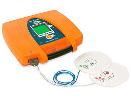
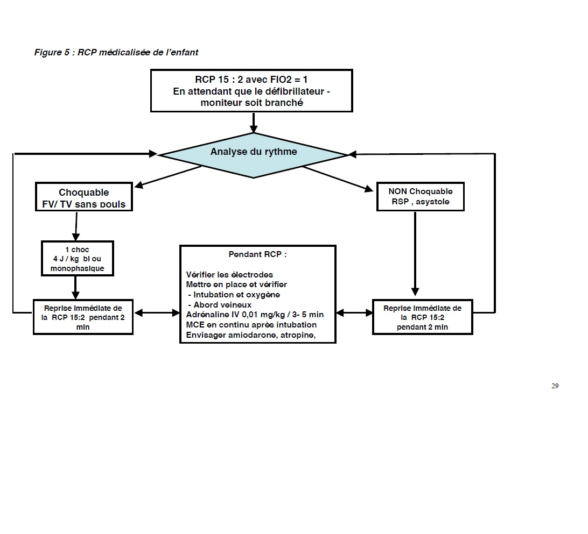

Bienvenue Sur Medical Education
Le defibrillateur semi-automatique
Le defibrillateur semi-automatique
Definition
Le defibrillateur semi-automatique (DSA) est un appareil dont le principe est simple :
Le defibrillateur semi-automatique est dote d’un ordinateur qui lui permet :
Le defibrillateur semi-automatique est tres fiable car il est a la fois sensible (il reconnaet les rythmes devant etre choques) et specifique (il n’invite pas a choquer un rythme non indique).
Les composants
Les accessoires
- Les electrodes de defibrillation : elles ont deux fonctions :
- Capter et transmettre l’activite electrique cardiaque a l’analyseur du defibrillateur.
- Delivrer le choc electrique a travers les electrodes si le choc est indique.
- Le ceble des electrodes :
- Le ceble permet de relier les electrodes au defibrillateur semi-automatique.
- Les autres accessoires :
- Un telephone portable ou un appareil de radio-transmission portable a proximite immediate permet de prevenir les secours medicalises rapidement.
- Une paire de ciseaux permet de couper les vetements et denuder la poitrine.
- Pour ameliorer le contact entre la peau de la victime et les electrodes, il est utile de posseder des compresses ou du papier absorbant pour secher la peau, ainsi qu’un rasoir pour couper les poils si cela s’avere necessaire.
- Un masque de poche, un embout buccal ou une protection faciale evite tout contact direct avec la victime lors de manœuvres de ventilation artificielle si le sauveteur n’a pas a proximite immediate un insufflateur manuel.
- La housse de transport protege le defibrillateur, permet son transport et le rangement du ceble, des deux paires d’electrodes et des differents accessoires indispensables a la defibrillation.
L'utilisation du defibrillateur semi-automatique
- Preparer la victime et connecter les electrodes :
- Enlever ou couper, a l’aide d’une paire de ciseaux, les vetements recouvrant la poitrine de la victime. Les electrodes seront collees sur la peau nue.
- S’assurer que la poitrine de la victime est seche pour que les electrodes adherent correctement a la peau. Si ce n’est pas le cas, la secher en utilisant des compresses ou du papier absorbant.
- Si la poitrine de la victime est particulierement velue, raser la zone oe les electrodes seront collees en utilisant le rasoir jetable.
- Sortir les electrodes de leur emballage, les mettre a plat sur le sol sans enlever la pellicule de protection et connecter le ceble aux electrodes si ce ceble n’est pas deje preconnecte.
- Coller l’une apres l’autre les electrodes sur la poitrine de la victime apres avoir enleve la pellicule de protection et en appuyant fortement (la position des electrodes doit etre conforme au schema visible sur les electrodes ou sur leur emballage) :
- L’une juste au-dessous de la clavicule droite, contre le bord droit du sternum.
- L’autre sur le cete gauche du thorax, 5 a 10 cm au-dessous de l’aisselle gauche.
- Les electrodes doivent etre correctement positionnees pour permettre au courant electrique de traverser le cœur et de realiser la defibrillation. Une bonne adherence de toute la surface des electrodes sur la poitrine est necessaire pour eviter le risque de brelure. Ecarter le ceble des electrodes de la zone des compressions thoraciques.
- Connecter le ceble au defibrillateur.

- Analyser le rythme cardiaque :
- Appuyer sur le bouton d’analyse quand le defibrillateur le propose et si l’analyse ne se lance pas automatiquement.
- Ne pas toucher la victime pendant l’analyse. Faire arreter la RCP en cours, demander a toute personne de s’ecarter en disant : a ne toucher pas la victime, ecartez-vous ! e.
- L’analyse realisee par le defibrillateur permet de reconnaetre les rythmes cardiaques qui necessitent un choc electrique. Si tel est le cas, le defibrillateur se charge automatiquement et un son se fait entendre. Tout mouvement de la victime pendant cette periode peut parasiter l’analyse.
- Delivrer le choc en toute securite :
- Si un choc est necessaire, l’appareil l’indique clairement avant de se mettre en charge.
- Ecouter et respecter les recommandations sonores de l’appareil.
- Annoncer a haute voix : a ecartez-vous ! a pour que toutes les personnes autour s’eloignent et ne touchent plus la victime.
- Appuyer sur le bouton pour choquer des que l’appareil vous le demande et apres s’etre assure une nouvelle fois que personne ne touche la victime.
- Suivre les recommandations de l’appareil et poursuivre la sequence de chocs si tel est la demande.
- Tous les defibrillateurs semi-automatiques necessitent l’appui sur un bouton par un operateur pour delivrer le choc.
- Rechercher les signes de circulation :
- Si le defibrillateur precise a pas de choc indique e, ne pas retirer les electrodes de defibrillation et contreler les signes de circulation.
- Si la victime ne respire pas et n’a pas de signe de circulation, pratiquer la RCP.
- Si la victime presente des signes de circulation et respire, la placer en position laterale de securite et surveiller sa respiration toutes les minutes dans l’attente des secours medicalises.
- Si la victime presente des signes de circulation, mais ne respire toujours pas, pratiquer la ventilation artificielle, faire une insufflation toutes les 5 secondes environ et contreler les signes de circulation toutes les minutes.
- Si la victime reprend conscience, la calmer, lui expliquer ce qu’il se passe pour la reconforter et attendre l’arrivee de l’equipe medicale.
- Eteindre l’appareil :
- Appuyer sur le bouton marche/arret.
- Eteindre l’appareil et retirer les electrodes de defibrillation uniquement en presence et a la demande du medecin des services de secours medicalises.
La reanimation cardio-pulmonaire avec le defibrillateur semi-automatique
